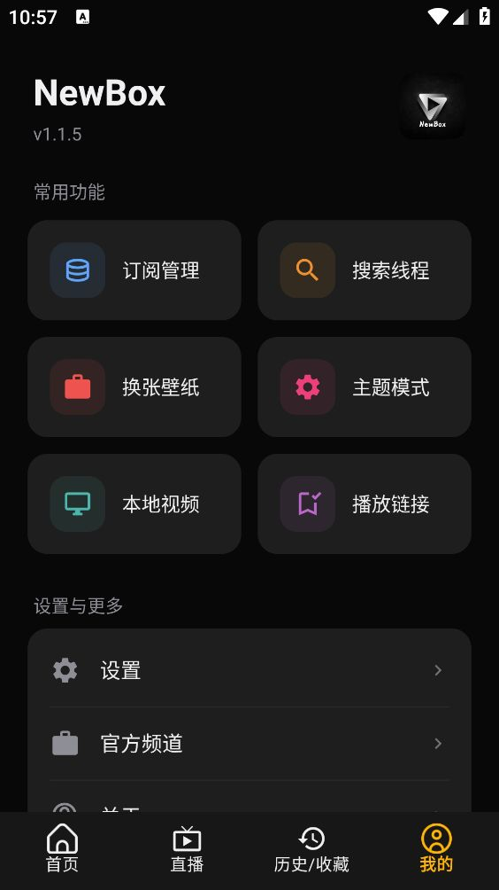
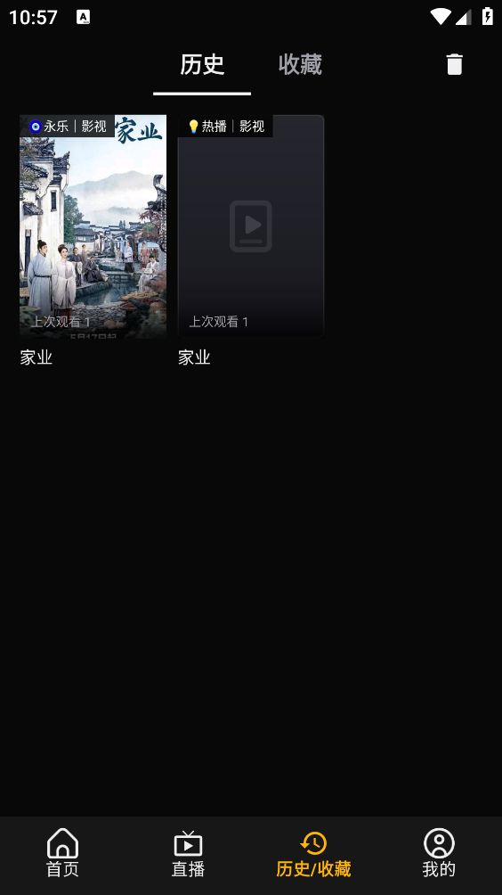

NewBox 到底值不值得掏钱？——一份关于零元播放器的付费决策账本
NewBox 是一款空盒架构的影视聚合播放器，本身完全免费。但"免费"不等于"零成本"，它有学习门槛、订阅源维护、设备兼容性等隐藏开销。本文把这笔账算透，帮你判断该不该花时间折腾它。
它到底值不值得掏钱？这是我用过 NewBox 半个月后反复问自己的问题。
NewBox 是一款影视聚合播放器，但它跟市面上大多数影视 App 有本质区别——它是一个"空盒"。下载安装后打开，首页一片空白，没有任何影片卡片。你需要自己手动添加订阅源（也就是外部接口地址），添加完才会出现分类标签和影片列表。官网对这个设计的解释是：规避版权风险、灵活度最大化、内容自主可控。听起来很美好，但实际用起来，这背后藏着一笔不少的时间账。

定价拆解：它免费，但免费不等于没有成本
先把最显眼的摆出来：NewBox 本身完全免费，没有内购、没有会员体系、没有贴片广告、没有启动弹窗。从这点来看，它比绝大多数"免费"影视 App 良心得多——那些 App 要么看 90 秒广告才能进正片，要么关键清晰度锁 VIP，要么首页推广告推送不停往你脸上塞。NewBox 没有这些，干干净净的播放器壳。
但免费软件的套路往往不在明面上，而在隐性成本里：
学习成本是第一道坎。打开应用面对一个空盒子，新手大概率要懵 5 分钟：订阅源是什么？格式是 JSON 还是 XML？接口地址去哪找？一个地址不够用怎么办？NewBox文档里介绍了订阅源格式和协议，也有格式示例，但对于完全没接触过这类东西的人来说，理解起来不是特别直观。我第一次加源的时候，把一个格式不对的地址粘进去，应用静默没反应，排查了十分钟才发现是 URL 里少了个 http://。
维护成本是长期的。订阅源会失效——维护者跑路了、接口变格式了、服务器挂了，这些都是常事。你今天跑得好好的一个源，下周打开可能就全 404。文档里提到"一个源失效了换另一个就行"，说起来轻松，但实际操作中你得定期检查源还能不能用、有没有更新的源可以替换。重度用户通常会同时挂 3~5 个源，就是为了防止某一个挂了突然没东西看。
设备兼容性成本是电视用户的专属烦恼。安卓手机装起来简单，从官方下载拿到 APK 后允许未知来源就行。但智能电视和电视盒子是另一回事——主流电视不让直接装第三方 App，你得走 U 盘安装法，有的盒子甚至被运营商锁了权限，得 ADB 推送或者刷机解锁。我家一台老广电盒子折腾了两个小时还是装不上，最后放弃了。文档里的安装步骤写得很细，手机版四步走完，电视版要六步，盒子特殊情况甚至得换盒子，可见这个门槛真不低。
算账：三档用户的时间成本分析
好，现在把这些隐性成本换算成时间，分三类用户来算。
轻度用户：每周看 1~3 部电影或追一部剧
免费版够不够？够。 轻度用户对内容量要求不高，一个稳定的订阅源就够撑一周的需求。加源学会之后就是复制粘贴的事，10 秒钟搞定。源失效的概率一周碰不到一次，就算碰到了换一个也就是 5 分钟的事。
时间成本： 加源学习 15 分钟 + 日常维护每周 5 分钟 ≈ 首月 1 小时，之后每月 20 分钟。
值不值？如果你的时间一小时值 10 块钱以上，其实是值的。 没有广告省下来的碎片时间、没有 VIP 焦虑的心理成本，换这一点点维护时间相当划算。但如果你是那种"连设置里调个亮度都嫌麻烦"的人——直接关掉这个页面，装个带片库的 App 完事。
主力用户：每天都看，追多部剧 + 电影
免费版够不够？能用，但开始有摩擦感。 每天追剧意味着你会高频遇到源失效——正在看的剧突然下一集加载不出来、之前收藏的分类整个消失，这些都是日常。你大概率会同时维护 3~4 个源，学会定期检查和更新。历史续播功能能帮你省不少事——它自动记录播放位置，重启应用秒接上次进度，连续剧跨集续播也能覆盖，这个体验比很多带片库的 App 还好用。

时间成本： 加源 + 筛选 + 日常维护每周 15~20 分钟 ≈ 每月 1.5 小时。
值不值？主力用户才是 NewBox 真正的受众。 你每天都打开，说明你真需要一个干净的播放器壳、不受片库限制的内容。这点维护时间摊到每天其实不到 5 分钟，换回来的是没有广告、没有内容推送、源失效了自己说了算——这个自主权是那些封闭片库 App 给不了的。
重度用户：影视发烧友，同时追 5 部剧 + 每天刷新片 + 电视手机多设备同步
免费版够不够？够用，但你会开始想有没有更省心的方案。 重度用户的源数量可能到了 8~10 个，有的是电影专源、有的是电视剧专源、有的清晰度高但更新慢。手机和电视双端都装的话，两边的订阅源还要同步——文档里没特别提多设备同步的功能，大概率是各管各的，得分别配置。源维护的复杂度开始呈指数级上升。
时间成本： 每周源检查 + 更新 + 多设备同步 ≈ 每月 4~6 小时。
值不值？这档用户是纠结的。 6 小时的维护时间，你完全可以用带片库 App 的 VIP 省下来——现在主流影视 App 的 VIP 一年两百多，摊到每月二十块出头。20 块买你一小时值不值？但如果你跟我一样，受够了爱奇艺把你追的剧独家锁走、受够了腾讯视频首页三屏广告、受够了每个 App 的会员都得续——那这 6 小时是"买"自主权的钱，而且是一次性投入，源维护的经验积累起来后会越来越熟练。
替代方案：不折腾 NewBox 的三条路
如果你看完上面的账觉得"时间成本还是太高"，那看看这三条替代路线：
第一条：躺平装带片库的 App。 这是最省心的路——打开就有内容，不用加源不用维护。代价是广告、会员门槛、内容受限于运营方。爱奇艺会员 + 腾讯视频会员 + 优酷会员三叠套餐一年大概 800 块，比 NewBox 的维护时间贵得多，但胜在零学习成本。适合轻度用户或对折腾零兴趣的人。
第二条：继续用 NewBox，但找别人维护好的源集合。 社区里有好心人整理好的"源超市"，你直接复制一堆地址进去就行。源失效了也有人帮你更新——相当于把维护成本外包了。缺点是你依赖别人的更新频率，而且这些集合源的作者什么时候不维护了，你又得重新找。
第三条：自己搭订阅源。 如果你有技术基础，完全可以自己写一个接口服务。这样源永远不会失效——除非你自己的服务器挂了。但这条路线的门槛就不是"不会写代码"能碰的了，而且自己搭服务器的成本（云主机 + 带宽）其实比买 VIP 还贵。适合真·发烧友，不是给普通用户看的。
结论：谁该用，谁不该用
算完这笔账，结论很清晰：
闭眼冲： 已经在折腾各种订阅源的老玩家、讨厌广告和会员套路的主力用户、家里电视和手机都想看同一套内容的人。NewBox 的"空盒"对你来说不是缺点，是最大的优点——你要的就是控制权，不是现成的片库。
再等等： 对订阅源概念完全陌生、又不想花时间学习的轻度用户。先装几个带片库 App 用着，哪天受够了广告或者想看某些独家内容被锁了，再来折腾也不迟。
永远不用付（时间）： 只偶尔看一两部电影、对"能播就行"之外的体验没要求的人。花那 15 分钟学习加源的时间，你都能看完半集剧了，不如直接装个带片库 App 完事。
我自己属于第二类——一开始是抱着"试试看"的心态装的，加第一个源花了 15 分钟，源失效第一次排查花了 10 分钟。但坚持到现在，加源就是复制粘贴，维护每周 10 分钟搞定。这笔账，我觉得值。资料也同步在开源社区做了多份备份，GitHub、Gitee 和 GitCode 三处都能拿到，防一手单平台挂掉访问不方便。